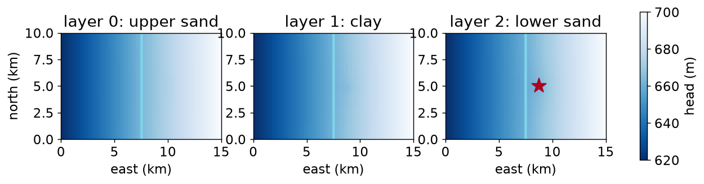

original 20x leakier
head difference across the clay 7.97m 4.12m
net river contribution (m3/d) 25,238 34,525
change in river contribution +36.8%HWRS 564a · Week 14 · Tuesday, November 24
Week 14, one session only — Thanksgiving is Thursday
vka is a separate argumentThe last two are how groundwater modelling actually starts in practice.
| Layer | Elevation | Material | hk (m/d) |
|---|---|---|---|
| 1 | 600 – 520 m | upper basin fill | 15 |
| 2 | 520 – 480 m | clay | 0.05 |
| 3 | 480 – 400 m | lower basin fill | 25 |
botm takes a list — one bottom per layer. top stays a single surface: the top of layer 1.
hk and vka are different argumentshk is horizontal conductivityvka is verticalThat ratio is the anisotropy, and it is what makes a confining unit confine.
Resistance to vertical flow through a layer is its thickness divided by its vertical conductivity.
Hint
Thickness over vertical conductivity, for each name. Both dictionaries share their keys.
Solution
8,000 days for the clay against 53 for the upper sand — 150 times the resistance, from a layer half the thickness.
That is what a confining unit is: not an impermeable barrier, but a layer whose resistance dominates the vertical path. Water still crosses it. It just takes a long time, and the head difference across it can be large.

The well pumps from layer 2, under the clay. Head difference across the clay at the wellfield: {python} f”{vdiff:.1f}“ m.
A single-layer model would have averaged all three units into one transmissivity and had nothing to say about which aquifer the water came from — which is exactly what a well-permit application asks.
RIV takes [layer, row, col, stage, cond, rbot].
stage → the aquifer drains to the riverstage and rbot → the river leaks in, proportionallyrbot → leakage stops increasing. The river is disconnectedThat last case is the point. A constant head at the river would supply unlimited water forever — which is why using one makes any pumping scenario look sustainable.
Hint
Once the water table drops below the streambed bottom, the driving head stops growing — it is fixed at stage - rbot.
Solution
2,500 m³/d, and it stays there whether head is 658 m or 640 m.
That cap is the whole difference from a constant head. Pump harder and a constant-head river gives you more, without limit. A real river runs out — and then the extra water has to come from storage or from somewhere else, which is what the budget will show you.
You will almost never build from nothing. You will be handed a directory of input files by a consultant, an agency, or a graduate student who left.
inherited = flopy.modflow.Modflow.load(
"layered.nam", model_ws=ws, exe_name=mf2005,
verbose=False, check=False,
)The .nam file is the index — one line per package. That is what you point load() at.
Inspect before you modify. How many river cells, what rate is the well, what is the clay conductivity. You cannot sensibly change what you have not read.
The clay’s vertical conductivity was a guess — nobody measured it. So test it: 20× leakier.
original 20x leakier
head difference across the clay 7.97m 4.12m
net river contribution (m3/d) 25,238 34,525
change in river contribution +36.8%Both models converged. Both closed their budgets. They disagree about how much of the well’s water comes out of the river.
The honest report is not to pick one. It is: at a clay conductivity of 0.005 m/d the well captures X from the river; at 0.1 m/d it captures Y; we do not know the clay conductivity to better than that range.
Hint
You ran two models that both converged and disagreed. What can you honestly say given both results?
Solution
A single model run is a hypothesis. A pair of runs that bracket what you don’t know is a result.
a reports one arbitrary member of a range as if it were the answer. d is worse: calibration produces one consistent explanation, and several different parameter sets will fit your observations equally well while disagreeing about the future.
That bracketing is what Project 3 asks you to produce, and it is the difference between a modelling report that survives review and one that comes back.
The model you just loaded had seven packages and 96 kB of input.
The Pinal AMA model used in Project 3 has around 400 MB: 212 MB of ET arrays, 100 MB of recharge, 12 MB of well records, and a multi-node-well package for individual pumps. Distributed separately — it is too large for the course repo.
What does not change: load() still reads it, change_model_ws() still saves you, the .list budget is still the first thing to read, and a run that converges is still not a run that is right.
What changes is minutes per run instead of seconds — which makes changing one thing at a time stop being good practice and start being the only workable method.
What you did today
botm is a list; vka is separate from hk and makes confining units confineload() from the .nam, inspect before modifying, change_model_ws() firstWhat’s due
Next week
Reading tracebacks and debugging, and getting code out of notebooks — with five weeks of MODFLOW behind you to supply the bugs.
Have a good Thanksgiving.
HWRS 564a · Fall 2026